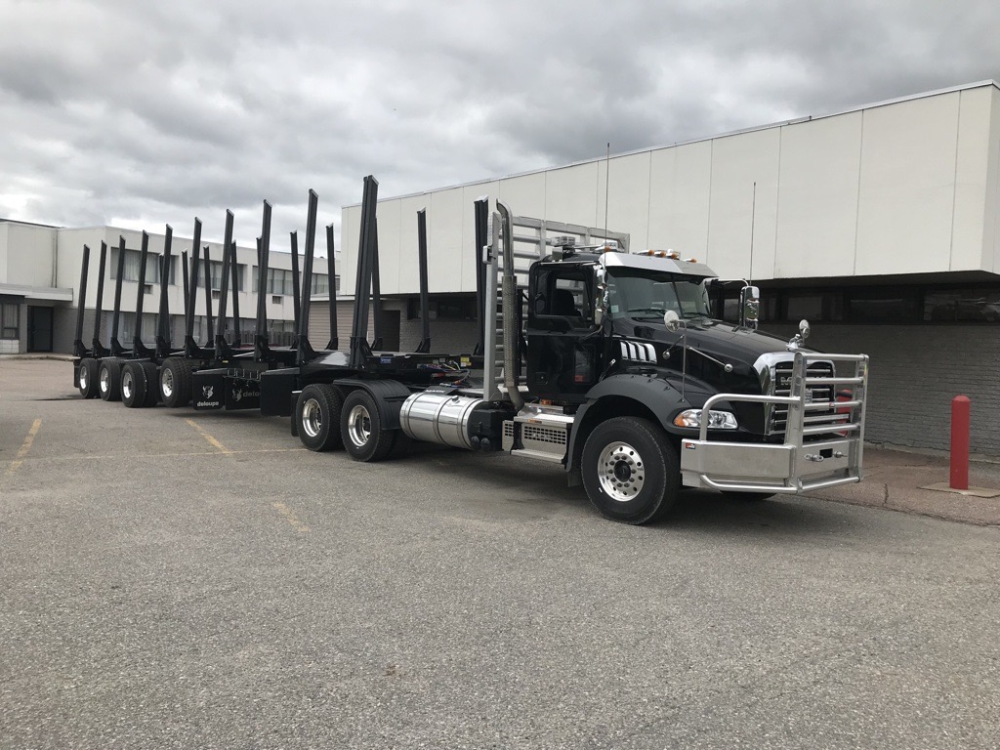

Objective
This research focuses on the development of optimization models for forest transportation, with particular emphasis on heterogeneous electric vehicle routing problems (EVRPs) applied to lumber and log hauling operations. The thesis evaluates the potential integration of electric and hybrid electric trucks in forestry through three complementary decision-making levels: strategic, tactical, and operational. Each level corresponds to a dedicated research article.
The strategic level examines the scale and impact of electric truck deployment in the forestry sector and assesses its broader implications for industry adoption. The tactical level addresses infrastructure planning by determining optimal locations for charging stations across the transportation network. The operational level focuses on identifying energy-efficient routes from a predefined set of feasible alternatives.
For both tactical and operational planning, the research develops optimization models grounded in detailed energy consumption analysis that accounts for vehicle technology and road characteristics. The project is conducted in collaboration with FORAC’s industrial partners, FPInnovations and Domtar, ensuring strong alignment with real-world forestry operations.
Methodology
The strategic planning phase employs a systematic literature review to analyze existing research on heavy-duty electric trucks and extract insights relevant to forest transportation. Studies are screened and classified according to strategic, tactical, and operational objectives. This analysis identifies key challenges, opportunities, and implications for forestry companies transitioning toward vehicle electrification.
The tactical planning phase involves the development of physics-informed energy consumption models for electric and hybrid electric trucks using detailed road profile data. The models incorporate factors such as vehicle speed, road gradient, electric propulsion, regenerative braking, and temperature effects. Model parameters are estimated using least-squares optimization techniques.
The proposed models are validated through multiple real-world case studies conducted on forest transportation networks in Québec, allowing for evaluation of accuracy, robustness, and practical applicability.
Expected Outcomes
The primary outcome of this research is a set of decision-support tools that enable forestry stakeholders to evaluate and compare truck technologies based on total cost of ownership, energy consumption, and geographic conditions. Recognizing that most forestry companies havent yet electrified their fleets, the proposed models and routing methods explicitly support mixed fleets comprising electric, hybrid electric, and diesel trucks.
By capturing the cost and energy trade-offs between different vehicle technologies, the framework helps fleet owners identify the most suitable vehicle choices under varying techno-economic and network conditions. Ultimately, this research supports informed decision-making to facilitate the profitable and sustainable integration of electrified trucks into forest transportation systems.


Rahul Iyer
PhD Student (Mechanical Engineering)